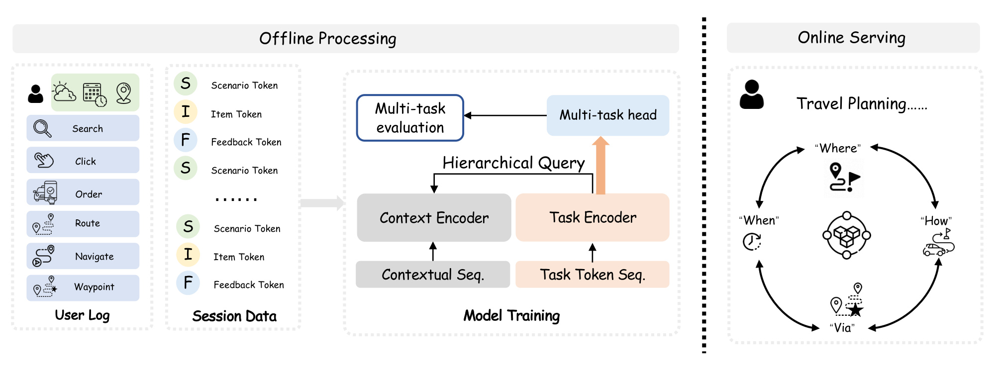
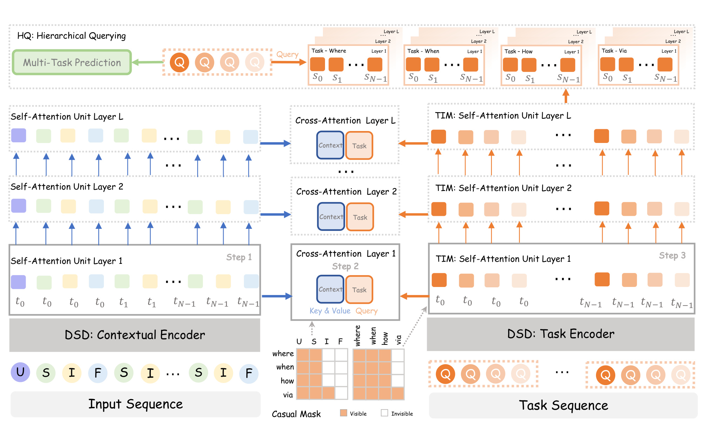
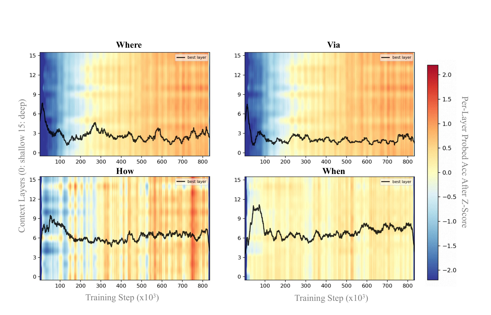
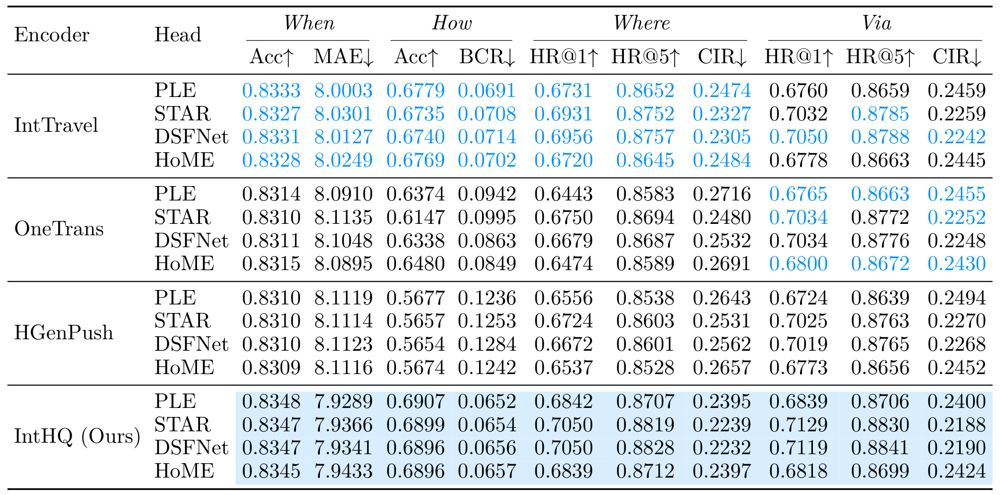
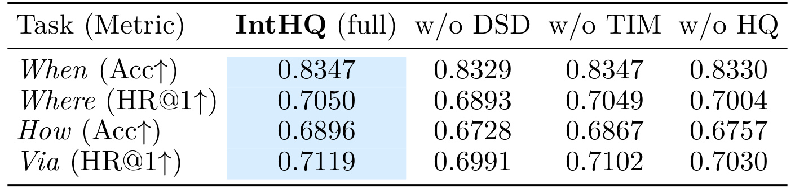
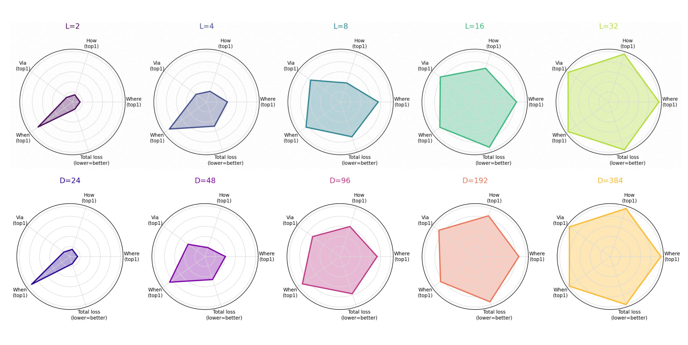
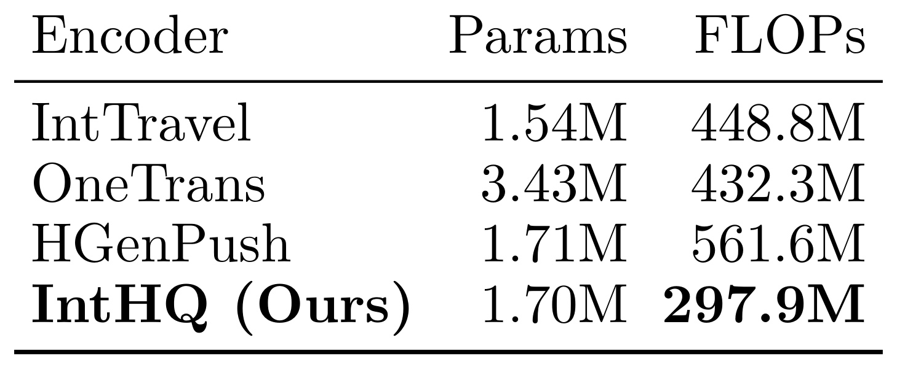
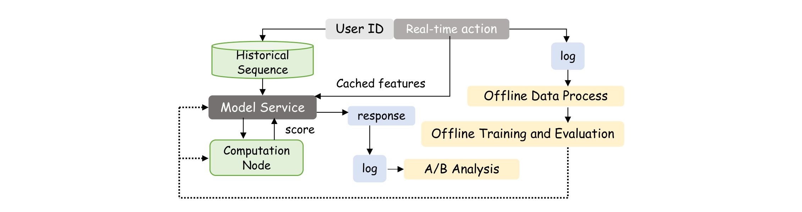

IntHQ：基于双流表示的任务交互式分层查询生成推荐
IntHQ 的英文全名是 IntHQ: Task-Interactive Hierarchical Query on Dual-Stream Representations for Generative Recommendation。论文由 Junjie Sun、Longfei Xu、Huimin Yan、Wei Luo、Kaikui Liu、Xiangxiang Chu 完成，一作主机构为 DreamX, Alibaba Group，公开于 2026 年 8 月 10 日。论文入口为 arXiv:2608.09634。本轮在已核验来源中没有找到独立代码仓库，因而下面的实现理解以论文架构、算法与实验表为依据，不把“可复现”当作“已开源”。
现有多任务推荐往往先把所有行为压缩成一个任务无关表示，再在末端接任务头或固定转化漏斗；一旦任务信号在共享空间中被稀释、任务依赖随场景变化、不同任务需要的表示深度又不相同，末端模块就无法恢复已经丢失的信息。生成式推荐若仍沿用这套单流、固定关系、末层读出的组织方式，会同时发生来源塌缩、关系塌缩与层级塌缩。
1. 背景和问题
工业多任务推荐的传统出发点是“共享越多，服务成本越低，稀疏任务也越能借到信息”。Shared-bottom、MMoE、PLE 主要讨论不同任务怎样共享容量；ESMM、AITM 把点击、转化等行为接成漏斗；PCGrad、CAGrad 等方法则从梯度冲突入手。这些方法最初服务于特征工程较重的判别式排序链路：底层接收统一特征，顶层分出若干任务塔。生成式推荐改变了基本计算单元——历史行为、反馈、上下文和候选被写进 token 序列，Transformer 直接做序列生成或大词表检索——但多任务部分往往只是把旧式任务头接到新 backbone 后面，或者把任务 token 与行为 token 混进同一条序列。IntHQ 的问题意识就在这里：生成式统一序列并不自动等于多任务统一建模。
论文把旅行推荐写成一个联合决策。对用户交互集合 (A)，四项任务集合为 (\mathcal K={\mathrm{when},\mathrm{where},\mathrm{how},\mathrm{via}})，目标标签是 (y=[y_k\mid k\in\mathcal K])。模型希望最大化联合目标：
符号解释：(\mathcal D) 是训练样本集合，(A) 是用户画像、时空状态和历史行为构成的上下文，(y_k) 是第 (k) 个旅行子决策，(\Theta) 是模型参数。困难不只在于四个标签空间差异巨大：when 与 how 更像小类别决策，where 与 via 面向海量 POI；还在于它们读取的证据尺度不同。通勤方式依赖长期规律，目的地常被当前时空场景强烈决定，途经点可能由本次行程里“临时加油”这样的短时需求触发。把这些信号压成单一末层向量，强势统计会覆盖少数但关键的局部证据。

Figure 1 左侧把搜索、点击、下单、路线、导航、途经点等日志按 session 组织成 scenario/item/feedback 三类 token；中间不是一个把所有 token 混在一起的 encoder，而是上下文序列与任务 token 序列分别进入 Context Encoder 和 Task Encoder，再由 Hierarchical Query 连接。右侧的 when、where、how、via 不是四个独立产品入口，而是同一旅行规划中的耦合决策。图中的环形关系很重要：目的地会约束交通方式，交通方式又影响出发时间与可行途经点，但这种约束强度随场景而变。固定顺序漏斗只能表达“永远如此”的关系，单一共享向量只能保留“平均而言重要”的信息；二者都难覆盖真实服务里随用户、session 和时刻改变的依赖。
论文把问题进一步分成三类 collapse。Source collapse 指任务身份进入太晚，任务相关信号在任务无关的共享隐空间里被稀释；如果 encoder 已经扔掉某项任务所需的信息，顶层再强的 head 也只能处理剩下的统计量。Relational collapse 指任务关系被 backbone 隐式吸收，或被人工固定成同一漏斗；前者难以控制，后者无法适应场景变化。Hierarchical collapse 指不同层从局部到长期形成不同粒度，却被末层读出或固定层门控压成一个表示。三者分别要求任务条件进入 encoder、任务之间显式传递、每个任务动态选择深度，而不是简单再堆一个多任务头。
这一判断由 Theorem 1 的风险分解支撑。若传统 Task-Agnostic Encoding 先得到 (z=\operatorname{Enc}(A))，再让各任务在给定 (z) 时条件独立地预测，则其相对联合 Bayes 风险的 excess risk 为：
符号解释：(I(A;y_k\mid z)) 是编码 (z) 丢掉、但第 (k) 个任务仍需要的条件互信息，所有任务求和形成来源塌缩；(\operatorname{TC}(y\mid A)) 是给定真实上下文后多个决策仍存在的总相关，形成关系塌缩；(R^\star=H(y\mid A)) 是允许联合预测时的理论最优风险。两项都非负，而且第二项不随 encoder 容量直接消失。这意味着加宽一个任务无关 backbone 也许能减少信息丢失，却不能让条件独立 head 自动表达任务联合分布。IntHQ 因而不是“更大 encoder + 更复杂 head”，而是把三个结构性缺口分别交给 DSD、TIM 和 HQ。
2. 方法
2.1 DSD：从 SIF 会话序列到参数解耦双流
Dual-Stream Decoupling（DSD）先把“持久上下文状态”和“当前任务判别”拆成两个参数空间。上下文流由用户画像 token (U) 与按时间排列的 scenario、item、feedback token 组成；scenario 包含时间、位置、天气等决策环境，item 表示交互 POI 及属性，feedback 表示搜索、点击、下单等行为类型。任务流则在每个 session 放置 when、where、how、via 四个可学习任务 token。两流的位置一一对应到 session，但从不拼接成同一序列，也不共享同一注意力核心。

Figure 2 可按“左—中—右—上”读取。左侧蓝色 Contextual Encoder 对 (U,S,I,F) 做因果自注意力，负责压缩行为状态；中间 cross-attention 让橙色 task query 读取蓝色 context key/value；右侧 TIM 再让同一 session 中因果可见的任务 token 交互；最上方 HQ 为每个任务保留从 Layer 1 到 Layer (L) 的状态银行，并用该任务自己的 query 选择层级。底部 mask 表明 where、when、how、via 对上下文和前序任务的可见范围不同。三次注意力在每层读取同一份层输入，可以并行计算；残差更新后才进入下一层。这张图也澄清了“双流”的含义：它不是把两段 token 先分别编码、最后再拼接，而是整个深度上都保持上下文参数与任务参数的角色分离，交互只通过受控 cross-attention 发生。
上下文序列和任务序列分别写成下面两个对象。前者描述“用户到目前为止发生了什么”，后者描述“模型此刻要为哪些旅行子决策取证”；二者以相同 session 节奏展开，但 token 类型、监督来源与参数职责不同，因此不能把第二式理解为第一式末尾追加四个普通 token：
符号解释：(T_u) 是用户 (u) 的 session 数，(S_t,I_t,F_t) 是第 (t) 个 session 的三类上下文 token，(q_k^t) 是任务 (k) 在该 session 的查询 token。任务 embedding 在样本之间共享，但每个 session 都实例化一次，因此它既提供稳定任务身份，又能通过注意力吸收本次 session 的具体状态。标签只挂到相应任务位置，统一 causal index (c(\cdot)) 要求 query 只能看见索引不晚于自己的 key：更早 session 全部可见，同一 session 内只允许因果先行的事实可见，用户画像拥有最小索引。
每层的两类 DSD 运算是：
符号解释：(H_{\mathrm{ctx}}^{(\ell)}) 与 (H_q^{(\ell)}) 是第 (\ell) 层输入的上下文/任务状态；第一式中上下文同时作 query 与 key/value，第二式中任务作 query、上下文作 key/value；(\operatorname{Attn}{\mathrm{ctx}}) 与 (\operatorname{Attn}_q) 参数独立。尤其是第二式读取当前层输入 (H)，因此同层内的上下文自注意力和任务跨注意力不存在串行数据依赖。DSD 的核心不是多放一组 token，而是让 context role 与 task role 不再争夺同一个权重块的最优点，同时又保留任务读取原始层级上下文的通道。}}^{(\ell)})，而不是已做完自注意力的 (\widetilde H_{\mathrm{ctx}}^{(\ell)
2.2 TIM：任务 token 之间的显式因果交互
只有 DSD 时，每个任务 token 都能查询上下文，却仍彼此独立，无法直接利用本次 session 中其他决策已经实现的结果。Task-Interactive Modeling（TIM）在每层增加任务自注意力，让后继任务在合法因果方向上读取前序任务状态，同时把交互强度交给当前输入决定：
符号解释：(\widehat H_q^{(\ell)}) 是跨任务交互产生的更新，query/key/value 都来自任务流；论文复用任务侧注意力核心 (\operatorname{Attn}_q)，但 mask 决定同一 session 中谁能看谁。由于进入 TIM 的任务状态已经积累了 cross-attention 上下文，它们不是四个固定 ID 的静态混合，而是“带有本次用户与 session 证据的任务表示”之间交互。注意力权重随输入变化，使目的地对方式的约束可以在通勤场景更强、在目的尚不确定的旅行场景更弱。
TIM 不把所有任务双向连通。论文把实际决策发生位置映射为 causal index：例如 via 可读取已实现的 where、when、how，反向读取被阻断。这样既让后继任务条件化于前序结果，又避免训练时把未来标签泄漏到前序任务。与 ESMM/AITM 类固定漏斗相比，顺序约束提供合法因果方向，注意力权重提供输入自适应强度。这里的边界也很明确：如果人为定义的任务顺序与真实业务因果关系不符，错误会沿允许的交互方向传播；TIM 能学习强弱，不能自动把一个错误的 causal mask 变成正确图。
同一层的更新把上下文读取与跨任务读取合并进任务残差，而上下文流保持 task-free。这个不对称更新很关键：任务侧同时吸收行为证据与决策依赖，上下文侧却不因某一任务的短期监督而改变自己的角色定义，下一层仍可作为所有任务共同读取的状态底座：
符号解释：任务流下一层同时收到“从行为上下文读到什么”和“从前序任务读到什么”两类增量；上下文流只累积自身状态，不被任务表示反向污染。这正对应 Figure 2 的 Step 1、Step 2、Step 3：三条路径读同一层输入，任务残差聚合后再进入下一层。训练时监督信号通过任务路径和 cross-attention 影响任务如何读取上下文，但不会把上下文自注意力参数与任务自注意力参数强制绑成一个折中解；推理时同一因果 mask 继续生效，不需要额外生成一条显式文本链。
2.3 HQ：任务条件化的跨层深度注意力
Hierarchical Querying（HQ）处理第三类塌缩。深层 Transformer 的浅层更接近当前 session 的高分辨率局部信号，深层逐渐聚合长期规律；若所有任务只读第 (L) 层，where/via 所需的即时线索可能被过度平滑。HQ 在每层结束后归一化并保存任务流状态，得到 ({h_q^{(1)},\ldots,h_q^{(L)}})。它保存任务流而不是上下文流，因为每个任务状态已经通过 DSD 按自己的信息需求查询过上下文；HQ 此时只需回答“哪一层更有用”，无需再次回答“哪些信息属于这个任务”。
对任务 (k)，HQ 将各层状态堆成 (Z_k=[H_{q,k}^{(1)};\ldots;H_{q,k}^{(L)}])，再做深度轴注意力。query 固定标识“哪个任务在问”，key 同时携带“第几层”与“这个样本在该层是什么状态”，value 则提供最终要汇聚的任务表示，因此权重不是全局静态层系数：
符号解释：(q_k) 是任务身份 embedding，(d_\ell) 标明层号，(d_a) 是深度注意力维度，(\alpha_\ell^{(k)}) 是任务 (k) 对第 (\ell) 层的权重，(z_k) 是送给任务头的最终表示。key 不只是固定层编号，还含本次样本在该层的状态，因此权重会随任务、用户、session 和训练阶段变化。最终层残差保证即使注意力分配尚未稳定也保留最高层语义，跨层加权则补回局部证据。与固定 per-layer scalar gate 的区别在于，后者只学“全局上第几层好”，而 HQ 学“这个任务在这个输入上此刻需要哪几层”。
2.4 训练目标、四类任务输出与推理链路
HQ 输出 (z_k) 后接任务特定 head。IntHQ 对 head 结构本身保持不可知：head 可以是 PLE、STAR、DSFNet 或 HoME，论文的贡献点是给这些 head 提供已经任务条件化、含跨任务信息、融合多层证据的 encoder 表示。每个任务使用 InfoNCE 形式的分类目标，总损失为任务损失求和：
符号解释：(I_k) 是任务 (k) 的候选集合，(i^+) 是真实目标，(\hat y_{k,i}) 是候选 (i) 的打分。when/how 标签空间小，(I_k) 取完整类别集合，等价于标准 softmax 交叉熵；where/via 面向大 POI 词表，训练时用真实目标加采样负例近似全量 softmax。四项 loss 端到端更新双流、TIM、HQ 和各自 head，没有先独立训练 context encoder、再冻结接任务流的阶段。
Algorithm 1 把每层执行次序写得很清楚：上下文自注意力、任务到上下文的 cross-attention、任务自注意力并行读取同一层输入；残差更新后保存任务层状态；全部 (L) 层完成后，每个任务独立做 DepthAttn、Head 和 InfoNCE。训练与推理的差别主要在监督与候选处理：训练要构造标签和负例并汇总四项 loss，推理不再计算 loss，而是一次前向得到四个 (z_k)。when/how 直接由小类别 head 产出分布；where/via 的大空间表示再与 POI 索引做检索。任务交互与层级查询都保留在推理图内，并非只在训练时提供辅助正则；这也是评估其部署成本时必须把任务流计算计入的原因。
3. 实验结果
3.1 层级塌缩的诊断证据
论文先在与生产设定对齐的 16 层基线上做逐层线性探针：每个 layer 的表示单独预测四个任务，记录训练过程中的可解码准确率。这个实验不是直接比较 IntHQ 与 baseline，而是在设计 HQ 之前回答“任务真的需要不同深度吗”。若所有任务始终在同一末层最好，HQ 会退化为多余模块；若最佳层跨任务或随训练变化，固定读出就有结构性不足。

Figure 3 的颜色是每层探针准确率沿训练维度做 Z-score 后的相对高低，黑线是平滑后的最佳层。Where 与 Via 的黑线大多落在较浅区域，说明目的地与途经点更依赖当前 session 的细粒度时空信息；How 与 When 的黑线更深，长期出行规律需要多层聚合。更关键的是黑线并非水平常数：同一任务在训练早期与后期的最佳层也移动。因此实验支持的是“动态跨层选择”，而不只是“给四个任务各指定一个固定层”。图中黑线是探针的 argmax，而 HQ 学的是连续 softmax 分布，二者不要求逐点完全一致；更合理的检验是 HQ 是否把主要质量分配到探针高可解码的层段。需要注意，Z-score 热力图主要表达相对层级与变化轨迹，不能把颜色直接解释成四任务之间可比较的绝对准确率。
3.2 数据、指标与四种 task-head 的全网格主结果
离线数据采用 IntTravel：约 41 亿条交互，覆盖约 1.63 亿用户与 730 万 POI，并同时含 when、where、how、via 四项任务。统一训练设置使用 3 层 encoder、96 维 embedding、最大序列长 120、每个 worker batch 64、8 张 PPU、AdamW 与一个 epoch。where/via 每个正例配 64 个负例，其中一部分均匀采样、其余为距离相关 hard negative。这个规模增加了工业相关性，也意味着公开实验不是轻量 benchmark 的可直接复现配方：数据、PPU 环境和采样索引都影响结果。
指标按任务语义分开。When 报 Accuracy 与 MAE，既看出发时间是否精确命中，也看偏差大小；How 报 Accuracy 与 BCR，其中 BCR 是主界面有限候选下的 bad-case 率；Where/Via 报 HR@1、HR@5 与 CIR，CIR 衡量 top-1 既不命中真实 POI、类别也不一致的比例。Acc/HR 越高越好，MAE/BCR/CIR 越低越好。十项指标把“推荐对不对”和“错得是否离谱”分开，避免只看命中率掩盖体验损失。
四种 task-head 覆盖不同共享方式。PLE 用共享专家与任务私有专家的渐进式抽取缓解负迁移；STAR 以共享中心网络和任务特定权重形成星形参数化；DSFNet 是论文生产侧 head，在共享专家池之上增加每任务私有专家；HoME 用分层 MoE、特征门控与自门控残差组织任务组。实验对每一种 encoder——IntTravel、OneTrans、HGenPush、IntHQ——都分别接这四个 head，所以可以把 encoder 改动与 head 改动解耦比较。

Table 1 最重要的读法不是只找全表最大值，而是在每个 head 内纵向比较 encoder。以 STAR 为例，IntHQ 的 when Acc/MAE 为 0.8347/7.9366，how Acc/BCR 为 0.6899/0.0654，where HR@1/HR@5/CIR 为 0.7050/0.8819/0.2239，via 为 0.7129/0.8830/0.2188；相对同 head 的其他 encoder，正向指标上升而负向指标下降。DSFNet 下也出现相同方向：where HR@1/HR@5/CIR 为 0.7050/0.8828/0.2232，via 为 0.7119/0.8841/0.2190。PLE 与 HoME 下，IntHQ 同样在对应 head 内领先全部十项指标。由此更稳妥的结论是：IntHQ 提供的 encoder 表示跨四类 head 有一致收益，而不是某个 head 恰好与模型耦合。
表中也能看到单流任务 token 并不必然更好。HGenPush 已把 task token 插入主序列，但 context 与 task 共用参数，它在 How 上尤其弱；OneTrans 统一序列与非序列特征，却没有显式任务 token 和跨层任务读出；IntTravel backbone 较强，但任务仍在编码后分叉。IntHQ 的优势模式与三类 collapse 的预测一致，不过这仍是同一数据集、同一训练协议内的比较。论文报告 head 内最佳与次优差异通过 t-test 达到其设定门槛，但跨数据域与跨推荐漏斗的稳定性仍需额外实验，不能由这张表直接推出。
3.3 DSD、TIM、HQ 的任务级消融
主结果说明组合有效，Table 2 再检查三个模块是否只是共同增参。消融保留四个代表指标：when/how 用 Acc，where/via 用 HR@1。完整模型分别为 0.8347、0.7050、0.6896、0.7119。

去掉 DSD 后四项都下降，where 从 0.7050 降到 0.6893，how 从 0.6896 降到 0.6728，via 从 0.7119 降到 0.6991；这种广泛退化符合 source collapse 的预期，因为共享参数折中影响所有任务。去掉 TIM 时，when 保持 0.8347，where 仅从 0.7050 到 0.7049，而 how 降到 0.6867、via 降到 0.7102；后两项更依赖前序决策，非对称变化支持“显式任务交互主要帮助依赖任务”。去掉 HQ 时四项都退化，how 降到 0.6757、via 降到 0.7030，说明固定末层难兼顾证据尺度。消融与理论对应较整齐，但它没有报告错误任务顺序、不同 causal graph 或交互强度受控的反事实，因此不能完全排除优化路径与参数分配带来的共同影响。
3.4 深宽缩放与计算代价
缩放实验分别扫描层数 (L\in{2,4,8,16,32}) 和宽度 (D\in{24,48,96,192,384})，其他超参数与数据流保持一致。作者用总损失与四任务 top-1 相关指标构造雷达图，观察容量增大后的整体趋势。

Figure 4 上排随深度增加、下排随宽度增加，雷达覆盖的面积总体扩大；Total loss 轴已按“越低越好”转换方向，所以面积扩大代表多任务整体改善，而不是损失升高。L=2 与 D=24 时不同轴非常不均衡，增加容量后四项任务更接近同时受益。该图支持“DSD/TIM/HQ 不会在扩容时破坏生成式推荐的缩放趋势”，但雷达图做过轴向处理，不能从多边形面积恢复原始数值，也不能据此判断边际收益是否足以覆盖训练和服务成本。更严谨的复现应报告每个配置的原始指标、方差与吞吐。
双流并不等于把单流开销简单乘二。若上下文 token 数为 (N_c)，每个 session 有 (K) 个任务、任务 token 数为 (N_q)，统一单流注意力的二次项是 ((N_c+N_q)^2)。IntHQ 每层分别计算 context self-attention、task-to-context cross-attention 和 task self-attention，其复杂度为：
符号解释：(L) 是层数，(d) 是宽度。与展开后的单流二次项相比，IntHQ 少了一份反向的 (N_cN_q) 交叉项；任务 head 也只消费自己的 session 任务 token，而不必在全部 context 位置执行。这一理论计数只覆盖主要注意力与 head 项，仍应由实测算子成本校验。

Table 3 固定 STAR、3 层、96 维和 batch 1，统计不含稀疏 embedding 表的稠密参数与算子级 FLOPs。IntHQ 为 1.70M 参数、297.9M FLOPs；参数规模接近 HGenPush 的 1.71M，却明显低于 HGenPush 的 561.6M FLOPs，也低于 IntTravel 的 448.8M 与 OneTrans 的 432.3M。换算相对量，IntHQ 的 FLOPs 约为 IntTravel 的 66%、OneTrans 的 69%、HGenPush 的 53%，但这些比例只针对表中固定设置。这个结果说明节省来自注意力拓扑与 head 读出位置，而不是单纯缩小模型。它还没有给出不同序列长度、不同任务数和真实服务 batch 下的完整延迟曲线，因此 FLOPs 优势不能机械等同为同比例端到端延迟优势。
3.5 线上部署与证据边界
线上架构把重的用户级序列构造移出请求路径。离线数据流程从日志物化 session 化历史并写入可按用户读取的存储；请求到来时，模型服务取历史前缀与实时动作，在计算节点完成 IntHQ 前向；where/via 的任务表示再连接 POI 检索；服务响应与新反馈重新写入日志，进入下一轮离线训练、评估和发布。这种拆分没有改变 DSD/TIM/HQ 的推理图，而是避免在线重复组装长历史。

Figure 5 的实线对应请求链路：User ID 与实时动作触发历史读取，Model Service 调用 Computation Node 得到 score 并返回 response；虚线对应模型更新链路：日志进入 Offline Data Process、Offline Training and Evaluation 与 A/B Analysis，再把更新后的模型送回服务侧。图中缓存历史与实时动作在服务入口汇合，说明个性化长期状态和当前 session 条件都保留；虚线闭环则表明模型面对持续变化的出行行为，需要反复离线刷新。该图能证明论文给出了完整部署组织方式，但不能单凭架构图证明模型更新频率、资源利用率或跨产品泛化。
在结果披露上，本笔记只采用事实包允许的线上证据：高德旅行推荐线上 UVCTR 相对提升 1.60%。这是相对变化，不是绝对 UVCTR；当前可用证据不补充实验时长、绝对基线或置信区间，因此不能进一步计算绝对增量，也不能对统计不确定性作数字化判断。它至少说明 IntHQ 的联合任务表示已进入真实旅行推荐场景并产生正向用户级点击指标变化，但“一个场景的相对提升”不等于已经验证所有地图入口、所有推荐漏斗或其他平台。
4. 总结
4.1 贡献与可迁移判断
IntHQ 最有价值的地方是把工业多任务生成推荐的三个结构性问题分别落到可检查模块：DSD 让任务身份在压缩完成前进入计算，同时避免 context/task 角色共享参数的折中；TIM 用受因果 mask 约束的任务自注意力表达随输入变化的决策依赖；HQ 让任务从多层状态银行中动态选取局部与长期证据。主结果跨 PLE、STAR、DSFNet、HoME 四种 head 保持同向，说明 encoder 侧任务条件化可以承担原本被全部压给 head 的一部分专业化工作；消融、层探针与 FLOPs 表又分别对应机制、层级与成本，证据链比只报一张主表更完整。
对推荐系统而言，这套设计可迁移到多目标召回、搜索推荐一体化、CTR/CVR 联合建模等场景，但前提是能明确 task token、同 session 的 causal index 与大空间候选训练方式。对大模型或 Agent 系统的启发则更抽象：共享上下文状态与任务/动作查询未必适合使用同一参数角色；多个工具决策若存在动态依赖，可以在受控可见性下显式交互；不同任务读取长上下文的最佳深度可能不同。不过 IntHQ 的证据来自生成式推荐，不能直接把 UVCTR 提升外推成通用 LLM 或 Agent 收益。
4.2 局限、风险与后续跟进
当前结论至少受四项限制。第一，任务依赖依靠预先定义的 causal order；若业务事实并非该顺序，TIM 会把错误上游结果传给后继任务，注意力只能调弱，不能修正图结构。第二，HQ 与任务流增加状态保存和调度复杂度，Table 3 的 FLOPs 较低不等于所有硬件、batch 和序列长度下都具有同等延迟优势。第三，离线结果集中在 IntTravel，高德线上证据也来自单一旅行推荐场景；跨电商、内容、广告漏斗以及新任务冷启动尚未验证。第四，代码、训练数据和生产索引未公开，负例采样、causal index 细节、任务 label 对齐和服务缓存会显著影响复现。第五，线上只知道 UVCTR 相对提升 1.60%，没有可用于本笔记的绝对基线和置信区间，因而不应把它描述成已经量化所有业务收益或统计风险。
后续可优先做三组工作：
- 复现 Table 2，并增加“错误任务顺序、全双向任务注意力、可学习稀疏任务图”三类对照，判断 TIM 收益究竟来自 causal factorization、输入自适应强度还是额外参数。
- 记录 HQ 在训练各阶段、不同用户活跃度与不同 session 类型上的 (\alpha_\ell^{(k)})，与 Figure 3 的线性探针最佳层对齐；若注意力权重与可解码层长期偏离，需要检查 depth embedding 或残差路径。
- 在相同候选索引与硬件上画出 (N_c)、任务数 (K)、batch size 变化时的显存、吞吐和端到端延迟曲线，把 Eq. (22) 与 Table 3 的单点 FLOPs 扩展成可用于容量规划的成本模型。
- 等待独立代码或更完整实现说明，重点核验 causal index 构造、relative-position/time-delta bias、where/via 负例采样和线上历史缓存更新；这些细节决定论文方法能否从概念结构变成稳定复现。
总体上，IntHQ 没有否定共享 backbone，而是重新划分共享边界：上下文可以共享，任务查询需要独立参数；任务可以交互，方向必须因果受控；深度可以共享，读出权重应按任务和输入变化。这个边界划分同时解释了离线多 head 稳定性与实际部署价值，也明确留下了任务图正确性、跨域验证和可复现性的研究空间。